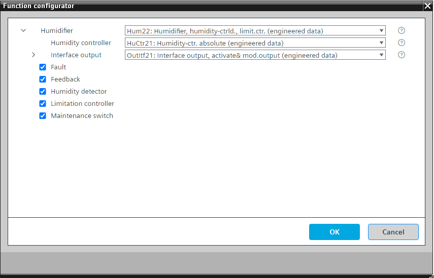

[Hum22] 加湿器，湿度控制，带限制控制器
Program block, name / node subtype: [Hum22] Humidifier, humidity-controlled, with limitation controller
Library hierarchy: Ventilation and air conditioning equipment
Family: Hum
项目树 | 图表 |
|---|---|
|
|
|


Configurator


程序块存储在没有 I/Os. 的库中 使用auto-create and auto-connect函数创建 I/Os 和 /or 将它们连接到接口块，例如 R_A、CMD_B。或者，从包含库中预定义 I/Os 的文件夹中取出 I/Os，并从工厂中取出 /or，并将它们连接到接口块。
通过调制加湿器控制单元 (OutItf21) 的输出信号来控制送风湿度（加湿）。或者，可以将不同阶段的请求发送到加湿器 (OutItf22)。
送风湿度（加湿）的控制预设为绝对湿度 (HuCtr21)。可以在功能配置器中将其更改为相对湿度。
对于用于在加湿器变得不活动之后将其值保持为“True”的操作状态的信号来说，存在延迟关闭时间，例如5分钟。如果在空气处理机组中使用（最有可能是这种情况），加湿器的运行状态由 CMDSEQ_B 读取。如果设备即将关闭且加湿器处于启用状态，则设备应在加湿器关闭的情况下运行一段时间以使其干燥。在关闭期间，CMDSEQ_B 在该延迟时间长度内接收操作状态“True”，并在继续进一步关闭之前等待。这有助于干燥。
该程序块具有以下可选功能：
Option: Fault (1xBI)
读取故障触点并生成警报。
Option: Feedback (1xBI)
读取反馈信号，如果加湿器必须运行时缺少反馈，则会生成警报。
Option: Humidity detector (1xBI)
读取湿度检测器的信号并停止湿度控制器和输出。
当加湿器关闭时，事件检测被抑制。
Option: Limitation controller
这是一个 PID 控制器，如果送风相对湿度达到例如 80%，则会限制湿度控制器的输出。
在控制绝对湿度的情况下，我们建议使用此选项，以确保相对湿度不会升得太高。
Option: Maintenance switch (1xBI)
读取维护开关的信号并产生警报。如果有效，输出将以非常高的优先级（优先级 2）停止。
姓名 | 描述 | 类型 | 报警/通知类 | 趋势/类型 |
|---|---|---|---|---|
HuCtr | Humidity controller | N/A | N/A | |
OutItf | Interface output | N/A | N/A |
姓名 | 描述 | 类型 | 报警/通知类 | 趋势/类型 |
|---|---|---|---|---|
Fb | Feedback | BI：二进制输入 | 是的，4 | No |
MntnSwi | Maintenance switch | BI：二进制输入 | 是的，5 | No |
LmCtr | Limitation controller | Ctr: Controller | N/A | N/A |
Flt | Fault | BI：二进制输入 | Yes, 4/5 | No |
HuDet | Humidity detector | BI：二进制输入 | 是的，5 | No |